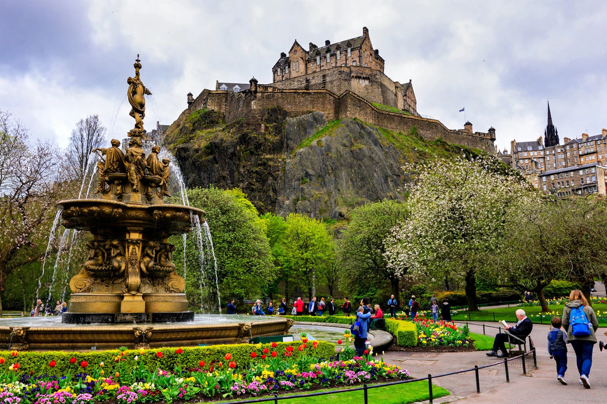

Edinburgh

| Country | Scotland, United Kingdom |
|---|---|
| Status | Capital of Scotland |
| Population | ~530,000 |
| Landmarks | Edinburgh Castle, Royal Mile, Arthur's Seat |
| Known for | Festival Fringe, Scottish Parliament, whisky |
Edinburgh is the capital city of Scotland and one of its 32 council areas. Located in the Central Belt on the southern shore of the Firth of Forth, it has been the capital of Scotland since at least the 15th century and has a population of roughly 530,000. It is the seat of the Scottish Government, the Scottish Parliament and the supreme courts of Scotland.
History
The city grew around the fortress on Castle Rock, occupied since at least the Iron Age. The medieval Old Town developed along the Royal Mile, the sloping ridge running from the castle down to the Palace of Holyroodhouse. In the 18th century the Georgian New Town was built to the north, a masterpiece of town planning; together the Old and New Towns are a UNESCO World Heritage Site. Edinburgh was a leading centre of the Scottish Enlightenment, home to David Hume and Adam Smith, and was nicknamed the "Athens of the North".
Culture and economy
Each August Edinburgh hosts the largest arts festival in the world, the Edinburgh Festival Fringe, alongside the Edinburgh International Festival, drawing performers and visitors from across the globe. Hogmanay, the New Year celebration, is similarly famous. The University of Edinburgh, founded in 1582, is one of the world's top universities. The economy is led by financial services — the Royal Bank of Scotland was founded here in 1727 — together with tourism, education and government. Arthur's Seat, an ancient volcano within Holyrood Park, provides the city's best-known viewpoint.
See also: London.